Welcome to my ramblings!
I'm a self taught web developer working towards a successful career in software development.
mySQL - CRUD!
CRUD = Create, Read, Update, and Destroy
I learned about CRUD briefly in Colt Steele's Full Stack Web Developer course. This courses also focuses on CRUD but will be a deeper dive since it is from the database perspective.
- Create - CREATE TABLE and INSERT INTO
- Read - How do we find data?
- Update - How do we update data? Mistakes or something changed.
- Destroy - How do we delete data? How do I delete everything or one or two things at at time?
This section of notes will focus mostly around Read, Update, and Destroy. For create you can see my screenshots of notes at the bottom of the page.
Read / SELECT refresher
How do we retrive and read date from a database? Surprise! It's the SELECT command.
SELECT * FROM cats;
SELECT all(*) the columns FROM table "cats." That's the basics. Will be used often to check things out. However, the real power of SELECT is used when selecting the specific columns you acually want from a table which will then be applied in future statements.
SELECT name FROM cats; Will return a list of all the names from the cats table. This can be recycled for any of the columns, or combination of columns, in the table.
SELECT name, age, breed, id FROM cats; Will return those specific columns in that order.
jQuery - love it or hate it, I'm going to talk about it
What the hell is jQuery?
At it's core, jQuery, is simply a JavaScript library that is primarily used ot manipulate the Data Object Model ("DOM"). It's not a language on its own and not particulary different than any other JavaScript library you might come across.
Manipulating the DOM isn't always easy - that's where jQuery comes in and why it exists. It also removes issues your app might encounter in different web browsers. The advantage is that jQuery allows you to focus 100% on building a fantastic application.
$ and jQuery
jQuery use $ as a 'pointer' to the JavaScript function/object that jQuery uses. This pointer makes writing jQuery code easier. Its existence is simply to avoid writing "jQuery" each time you utilie the library.
Using the $:
- $(string)
- $(function)
- $("DOM Element")
- $.method()
Adding jQuery to your project
There are multiple methods to apply jQuery but the recommended method is to use a Content Delivery Network ("CDN"). Much like this CDN hosted by Google.
CDN's are usually much faster than your server and allow you to take advantage of the CDN server's caching feature.
Remember to use the minified version of jQuery when linking to your project. The minified version is simply an unformatted file that still runs the code but more efficiently.
jQuery Selectors
jQuery allows you to easily select specific elements of the DOM: $("div"); or $(".image"); or $("#nav");.
Additionally, you can find children or parents of a specific DOM element by using DOM traversal methods for navigating through the DOM.
For example: use $("#id_name").parent() to find the immediate parent.
There is a TON of additional information about jQuery but I will spare you the details and instead provide you the documentation! YEAH!
Lets DRY up this Python code!
DRY = Don't Repeat Yourself
I've been working through the final project of the Udacity Intro to Programming Nanodegree this past week. The project requires the use of SQL and python to complete. I've created a project the meets all the criteria EXCEPT it is not DRY.
I thought this would be a great opportunity to document how I go about cleaning up code that is performing as expected. This is essentially the final phase of software development for me.
The first part I need to tackle are the functions I'm using to run my SQL queries to the database. You can see that all three functions are the same except for the individual query.
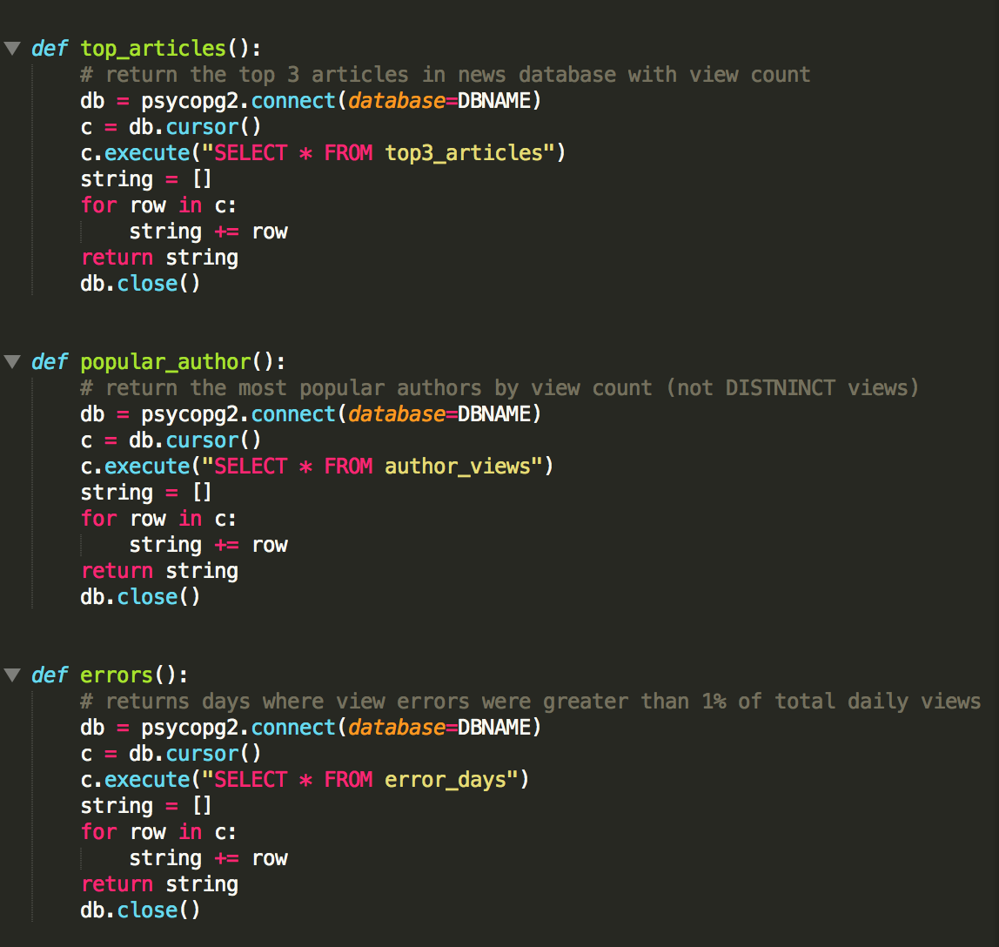I think it makes the most sense to turn this function into a single function with loop functionality pointed at an array that holds the three queries.
My solution was to nest two for loops and create an empty array. The empty array is then populated with a series of sub arrays from the nested for loop that represents each individual query.
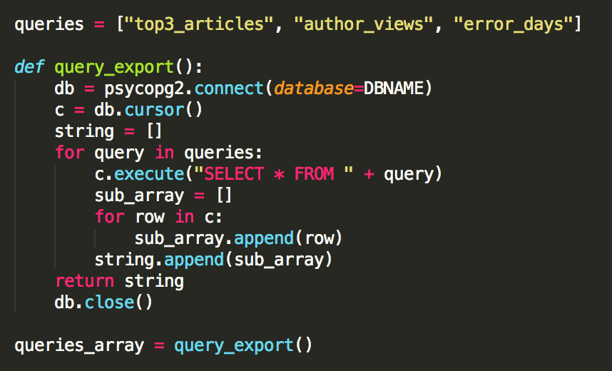This solution returns a single array with each individual query included as an element array.
JavaScript Object
Object basics
Objects are a type of data structure in JavaScript that allow you to store data about a particular 'thing.' Objects help you keep track of that data by using a 'key.'
For example: say you wanted to code a program about a specific person. You would need to keep track of thei name, age, parents, sibling names, favorite color, favorite food, etc.. Instead of writing thousands of individual variables you would create an object.
JavaScript objects live inside {}'s. These objects will contain properties or methods (something the object can do).
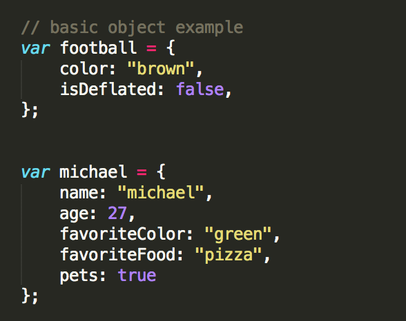Note: a cool operator to keep in mind while writing JS is "typeof." This operator will return the name of the data type of JS code.
Primitive data types consist of:
- strings
- numbers
- booleans
- undefined
- null
Object-Literal Notation
- Key - is on the left side of the colon. It represents a property or method for the object.
- Value - is the on the right side of the colon. This obviously represents the value and can be any data type.
- : - the colon is required and must be used when seprating the key and value.
- { }'s - the entire object must be wrapped inside curly braces
- ; - just like a normal line of JavaScript code, a ; must be tagged on the end of the objects - after the }.
Bracket Notation / Dot Notation
Similar to indexing an array, you can access information from an object by using a specific 'key.'
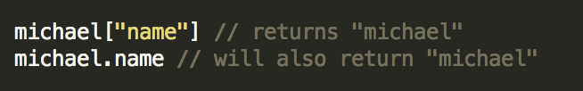Notice how bracket notation requires warpping the text in quotes whereas dot does not.
This stackoverflow discussion covers the pro's and con's of each methodolgoy. But overall, it is better to use bracket notation because it provides more customization whereas dot notation is simply easier to write and read.
Object Methods
Storing functions under a key in an object is acceptable and should be taken advantage of. But I want to note the different ways of calling upon them with bracket and dot notation.
If using dot notation simply: object.key_name.function_name();
If using bracket notation: object.key_name["function_name"]();
Remember to put the ()'s outside the brackets!
Naming Conventions
A few rules regarding naming conventions around object properties:
- Quotes around the key property name are valid but not required. Quotes can sometime mask potential problems (see next bullet).
- Numbers should not be used at the beginning of names - EVER!
- Spaces and Hyphens this is another concept that should be avoided at all cost in any type of data structure name.
- camelCase this is the preferred naming methodology for multiple word names.
JavaScript Arrays
General Info About Arrays
An array is a JavaScript data structure that allows you to store multiple values. This is useful because it allows you to house mutliple items in a single, organized data structure.
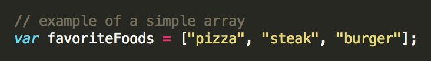Arrays can hold pretty much any data type. Strings, ints, booleans and other arrays! Also, you can multiple data types in a single array.
Nested arrays should be formatted as follows. Otherwise they become incredibly difficult to read.
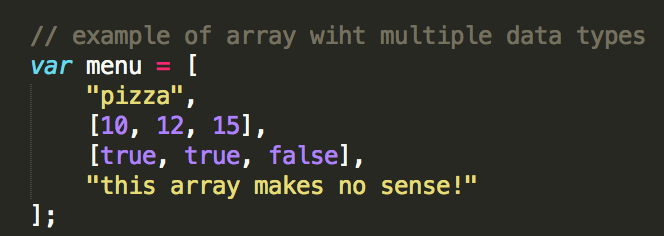You can index items in an array similar to other programming languages: array_name[index].
Changing values of items is as simple as indexing and setting that index = to a new value: array_name[index] = newValue.
Array Properties and Methods
Array.length will return the number of elements in an array. This is similar to string.length.
Here is the link to the MDN page covering Arrays.
Array.push(element) allows you to add data to the end of an array.
Array.pop() automatically removes the element from the end of an array. You don not need to pass a parameter into the ( )'s.
Array.splice(startIndex, #elementsRemove, elementsToAdd) allows you to add and remove elements from anywhere inside an array. splice() allows you to enter the index location where you'd like to add new elements and the number of elements you'd like to delete from the original array (if any).
The splice() MDN Documentation page provdies a lot of good information and examples.
Other Methods
Array.reverse() reverses order of elements. First becomes last and last becomes first.
Array.sort() sorts elements of array. Note: numbers are converted into strings and will not be sorted numerically!
Array.shift() removes the first element from an array and returns that element.
Array.unshift() adds one or more elements to the front of an array and returns the new length of the array.
Array.slice() extracts a section of an array and returns a new array. Method allows you to create a copy of the array between two indices, this approach does not directly modify a given array.
Array.join() joins all elements of an array into a string.
forEach Loop
Arrays have a special set of methods that can iterate and perform operations on collections of data. The entire list of methods can be found here. However, the popular methods are forEach() and map().
forEach() provides a method that allows you to iterate over an array, without a for/while loop, and manipulate each element in the array. This method is commonly used during inline function expressions.
The difference between forEach and for or while loops is that forEach does not require an index to iterate. It also MUST iterate over every element. If you need to skip every X element than a for loop will suit you better.
The forEach function accepts up to three parameters. The parameters are: element, index, and array. They can be labeled however you choose.
- Element: The value of the array element.
- Index: The built in forEach index. Will start with 0.
- Array: The reference to the whole array. Can be used to modify specific elements.
map() is another array JavaScript method you should be familiar with. This is similar to a forEach() because it loops through an array and touches every element.
The kicker is that map() will return the results in an entirely new array!
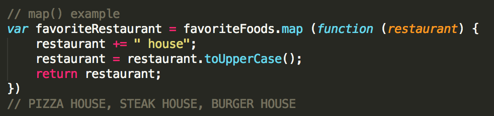JavaScript Functions - The Interesting Stuff
Scope
Global variables, variables declared outside of functions, are available everywhere. The advantage of this is that you have the abilit to access these variables at any point in a program. However, this methodology is NOT scalable and should be avoided. Variables should live at a local level within functions whenever possible.
The JavaScript engine will look in the current function for a variable. If the variable is not found it will proceed to the next outer function and so on. It will continue this search until reaching the global scope level.
At the end of the day the big idea is this: global variables can lead to messy code and poor naming conventions.
Hoisting
This was something new. Every course I took centered around JavaScript did not address hoisting.
Important Concept: JavaScript will hoist function and variable declarations to the top of the current scope.
However, variable assignments are not hoisted. Meaning if you happen to declare a variable used in a function at the end of the function, it will not work.
Declare functions and variables at the top of your scripts, so the syntax and behavior are consistent with each other.
Function Expressions
Function Expression: When a function is assigned to a variable. The function can be named, or anonymous. Use the variable name to call a function defined in a function expression.
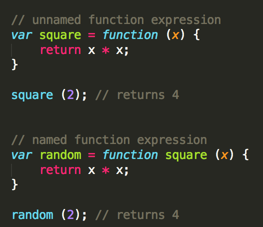In addition, if you're writing a function that you're 100% certain will only ever be used in that instance then you can write the function inline.
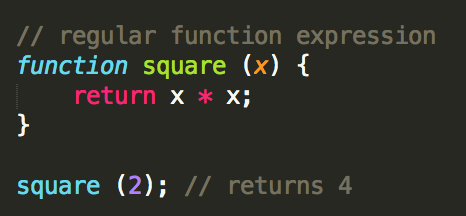BUT I think the normal practice will be to NOT write a function into a variable. Unless there is a specific reason where I will need to redefine the actions for that function.
Source: Udacity Grow With Google Scholarship
mySQL - Current Notes + Thoughts
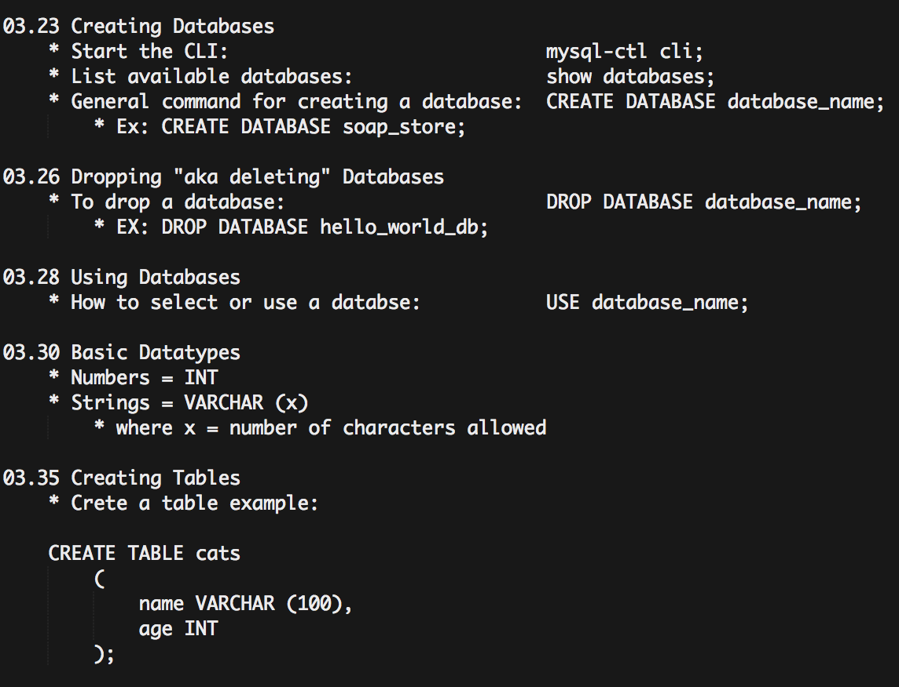
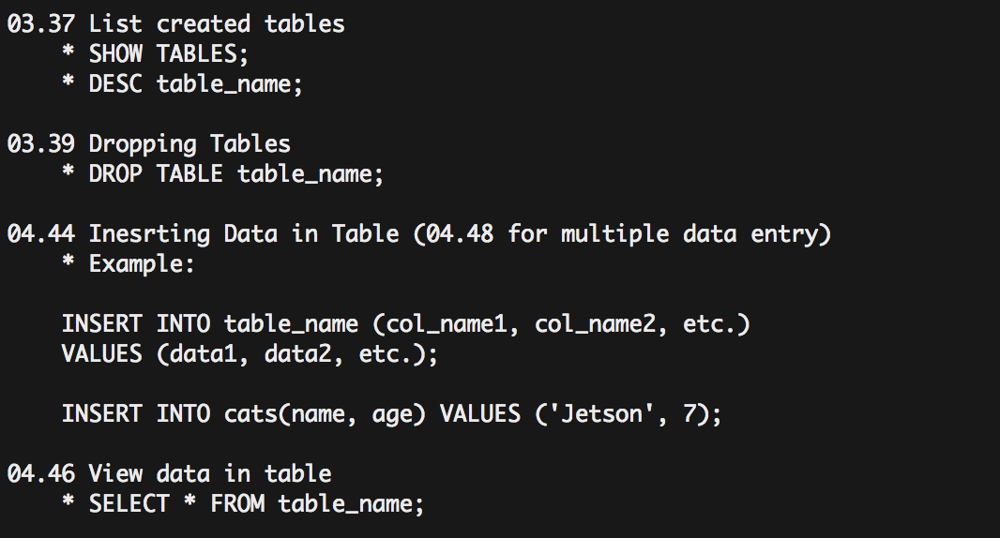

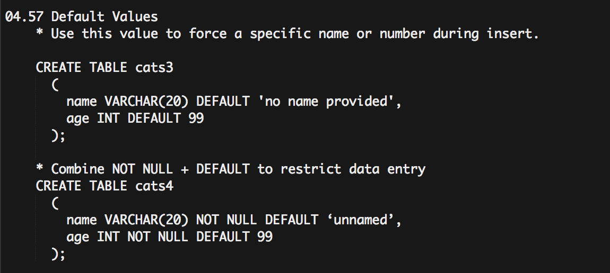
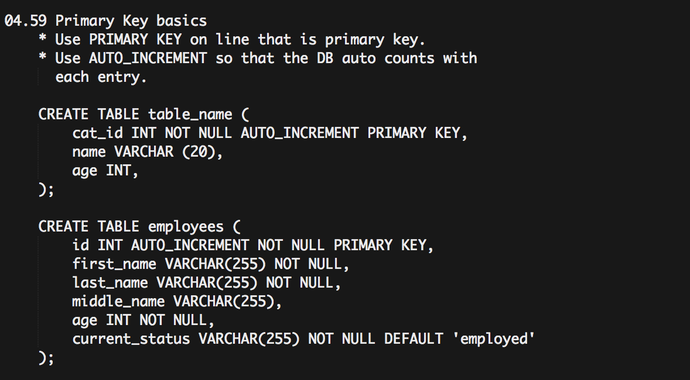
This is my first blog!
Welcome to my first blog. I built this website to serve as a place where I can dump all my notes and thoughts during my web development journey.
So far I've dabbled in:
- Colt Steele's Web Developer Course - COMPLETED
- Udacity's Intro to Programming Nanodegree - COMPLETED
- Google's Front End Grow With Me Scholarship - COMPLETED
- The Complete Node.js Developer Course (2nd Edition)
- M001: MongoDB Basics
- M101JS: MongoDB for Node.js Developers
- The Ultimate MySQL Bootcamp
- Free Code Camp
- How to Use Git and GitHub
- JavaScript: Understanding the Weird Parts
- Learn and Understand NodeJS
I'll continue to come back and drop in notes from these courses overtime